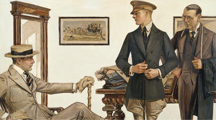
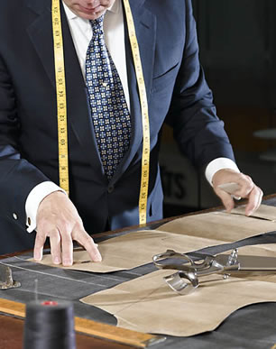
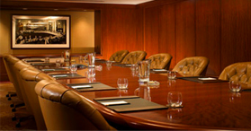
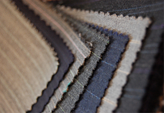
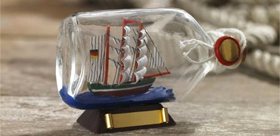

Our custom suits
There is nothing quite like dressing in a bespoke custom suit. We do not know any person who would ever want to wear a off-the-rack polyester suit again after trying one of ours. The outstanding proper look that comes hand in hand with a second-skin-like fit and of cause the possibility to have the suit tailored your way is something so unique as well as the feeling that you have while wearing a suit made for you. Just you. Additionally the light feeling of our high-quality fabrics combined with the mastery of true traditional craftsmanship of tailoring and the ecological approach is valuable.
Our dress shirts
The perfect dress shirt cannot be found in a common dress shop for you are special in every detail of your body and there is no one-size-fits-all. Therefore our pattern cutter cuts every pattern for your very personal shape to assure the industry leading perfect fit of your custom dress shirt. Additionally you have the power to have every aspect of the custom dress shirt your way, from the collar to the ending. It is yours. Moreover you will love the feeling of authentic fibers on your skin as we only use 100% Italian Cotton and Cashmere, unlike others who manufacture with polyester.
Our tuxedos
There comes a time where you need to wear a Tuxedo, Frack or Morning Coat. Don't be scared if this will be there first time for you, as we got some Q&A on this topic here. If you are a person who need s to wear tuxedos more often you found your place to be. We got the best custom tuxedos around. Period. Ask one of our members and you will know why people come to Seidenbach custom tailors. We use only Cashmere-Silk-Blends and most exclusive Italian Cashmerewool for our Tuxedos, but can also work with velvet and other luxury fabrics. Have it your way.

Seidenbach exclusively employs expert tailors who have handcrafted superb custom dress shirts, custom suits and custom smokings for happy international members for decades. All of our tailors are industry experts in the art of tailor made dress shirt making, are experts within the craft of fine detail, and diligently apply the particular personal preferences of our respected clients.
All of our custom men's dress shirts are made by hand with traditional artistry, more than long hours of committed work, through skilled tailors. Our tailors use their own individual knowledge along with many years of encounter in order to craft the most perfect dress shirt for men. All of our custom dress shirts are completely tailored through the same tailor, which allows us to persistently present high-quality craftsmanship. Over the entire manufacturing procedure, every single dress shirt goes thru several quality assessments from several independent, educated individuals to guarantee it satisfies Seidenbach's excellent requirements.
The whole production process of Seidenbach's custom made cloths is under strict, close supervision to ensure excellent high-class-quality of all custom suits, custom shirts and custom tuxedos as well as good good working conditions for all employees (see our
Code Of Conduct). We import our first class materials from all over the world, primary from Italy, England and Egypt to our tailoring facilities.
Seidenbach is very focused on corporate social responsibility. We try hard to run an eco-friendly and intra-cultural, socially responsible organization that provides appropriate working conditions while paying respectable salaries.
Seidenbach always strives to run a eco-friendly and socially responsible organisation that produces sustainable custom suits, custom dress shirts and custom tuxedos for men.
As a matter of fact we therefor teamed up with our partner Carbonfootprint.com, to offset entirely our carbon footprint, when we cannot minimize our environmental impact for some reason.
The following is an honest overview of the 'Seidenbach Ecology':

Employees
All of our employees work under fair conditions and are paid fair salaries that enable them to live a proper life. As a matter of course, we are against child labor of any form in the production of our bespoke men's suits, custom shirts and custom tuxedos.
Suppliers
All of our suppliers are carefully chosen with a long-term collaboration in mind to improve all of our products continuously over time and to ensure reciprocal growth. Self-evidently we do periodical check-visits to talk to the supplier employees to make sure they adhere to our ecological standards we earlier agreed to.
Customers
We are always committed to offer our respected clients the most value for their money and are honest and open for all conversation-seeking clients. We are doughty to deliver timeless elegance for real gentleman.

Waste & Carbone Dioxide
To reduce environmental impact of waste and carbon dioxide we try to use recycled paper, folders and others in the office and carbon offset (through our partner) what we cannot reduce.
Fabrics
Everything from the yards of finest silk and cotton thread to bees-wax and horsehair stiffener, from canvas backing and cotton padding to the super-fine woollen cloth, and the superb twill, silk or satin lining and buffalo horn buttons that finish it off, is carefully selected and matched in harmony.
Mother of Pearl buttons
Our supplier has pearl farms in Tahiti from which our MOP-buttons are taken from. We do not use any poached pearls and never will.
Packaging
Our packaging consists of about 95% recycled materials and 100% recyclable materials. A 100% recycled paper box is coated with partly recycled, handmade mulberry paper. The packaging is produced in Northern Thailand by rural people in a fair trade manner.

Transportation
To reduce our environment impact our employees to not travel more than needed. Of cause also all of our product-shippings are reduced to a significant minimum. Moreover we offset through our partners what we cannot reduce to run a eco-friendly organization. Furthermore all third party shipping from the tailoring facilities to the storage places is done either by foot or by Hybrid car.
Shipping
At this point some people might ask how it is possible to be an eco-friedly organization while shipping garments from all over the world. This is really simple. Not only are we eco-friendly but also social-conductive. We offset every carbon emission what we cannot reduce to a minimum through dedicated partners. Moreover we help many local people to earn a proper living. We are proud to be a traditional, an environment-friendly and a social-conductive organization.
Seidenbach S.à.r.l.
15 Rue Eduard Steichen
Luxembourg, L-2450
In cooperation with  and
and  .
.
Membership inquiries should be sent to Membership Director A. Heller by Email.
Join us along with other followers on twitter and fans on facebook for the latest updates.